Келтирилмайдиган купхадлар майдони
Таъриф. Айтайлик, R – ихтиёрий халка бўлсин. У холда R да аникланган кўпхад деб куйидаги:
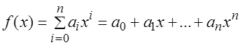
ифодага айтилади, бу ерда 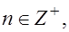 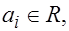 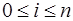
Фараз килайлик 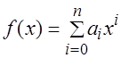 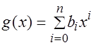
Таъриф. f(x)=g(x) тенг деб аталади, агарда барча учун ai=bi бўлса.
Таъриф. f(x) ва g(x) кўпхадларнинг йигиндиси деб куйидагича аникланувчи кўпхадга айтилади:
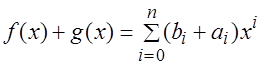
Таъриф. f(x) ва g(x) кўпхадларнинг кўпайтмаси деб куйидагича аникланувчи кўпхадга айтилади:
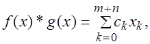 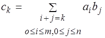
Бевосита ишонч хосил килиш мумкинки, бундай киритилган амалларга нисбатан кўпхадлар тўплами халка ташкил этади. Бу кўпхадлар халкаси R[x] – оркали белгиланади, яъни, R[x] – халканинг нол элементи сифатида нолинчи даражали кўпхад олинади.
– кўпхад R – даги ва 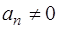
Таъриф. Агар R – халка бирлик элемент ва an=1 бўлса, у холда f(x) – кўпхад нормаллашган (ёки келтирилган ёки унитар) дейилади.
Таъриф. g(x) 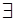 F(x) – кўпхад f(x)
F(x) – кўпхад f(x) F(x) кўпхадни бўлади дейилади, агар
F(x) кўпхадни бўлади дейилади, агар
 F(x) – кўпхад мавжуд бўлиб,
f(x)=g(x)*h(x) ўринли
бўлса.
F(x) – кўпхад мавжуд бўлиб,
f(x)=g(x)*h(x) ўринли
бўлса.
Бу ерда F(x) – деганда кандайдир F – майдонда кўпхадлар тўплами караляпти деб тушунилади.
Теорема. (Бўлиш алгоритми).
Фараз килайлик g(x) 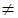 F[x]), F – майдон. У холда хар бир
f(x)
F[x]), F – майдон. У холда хар бир
f(x) F(x) учун g(x), r(x)
F(x) учун g(x), r(x)  F[x]
бўладики,
F[x]
бўладики,
f(x)=q(x)*g(x)+r(x), бу ерда deg (r(x))<deg (g(x)).
Мисол. Куйидагича
f(x)=2x5+x4+4x+3,
g(x)+3x2+1 (f(x),
g(x) F5[x])
кўпхадлар берилган. Топиш керак: q(x),
r(x)
F5[x])
кўпхадлар берилган. Топиш керак: q(x),
r(x)  F5[x]=?
F5[x]=?
Ечиш.
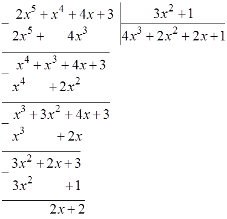
Ушбу хисоблашларда куйидаги тенгликлардан фойдаланилди, яъни биринчи айиришда -4х3 бўлиши керак эди, лекин -4(mod5)=1(mod5), иккинчи айиришда -2х2 бўлиши керак эди, лекин -2(mod5)=3(mod5).
Демак, r(x)=2x+2, q(x)=4x3+2x2+2x+1.
Куйида f(x) ва g(x) – кўпхадларнинг ЭКУБини топиш масаласи келтирилган.
Евклид алгоритми. Фараз килайлик f(x), g(x)
 F(x), g(x)?0 ва
f(x):g(x) бутун бўлинмасин (яъни колдик колсин). У
холда худди сонлар устида Евклид алгоритмига ўхшаш:
F(x), g(x)?0 ва
f(x):g(x) бутун бўлинмасин (яъни колдик колсин). У
холда худди сонлар устида Евклид алгоритмига ўхшаш:
f(x)=q1(x)*g(x)+r1(x),
0 deg(r1(x))<deg(g(x)),
deg(r1(x))<deg(g(x)),
g(x)=q2(x)*r1(x)+r2(x),
0 deg(r2(x))<deg(r1(x)),
deg(r2(x))<deg(r1(x)),
r1(x)=q3(x)*r2(x)+r3(x),
0 deg(r3(x))<deg(r2(x)),
deg(r3(x))<deg(r2(x)),
2e2e.............................................................
rs-2(x)=qs(x)*rs-1(x)+rs(x),
0 deg(rs)<deg(rs-1),
deg(rs)<deg(rs-1),
rs-1(x)=qs+1(x)*rs(x)+0.
Демак, ЭКУБ (f(x), g(x)) = rs(x), агар rs(x) – кўпхаднинг энг юкори коэффициенти 1 бўлса, ЭКУБ (f(x), g(x))=b-1*rs(x). Агар rs(x) – кўпхаднинг энг юкори коэффициенти b бўлса, ЭКУБ (f1(x), f2(x), ... fn(x)) топиш учун эса, аввало ЭКУБ (f1, f2) – топиб , кейин ЭКУБ (ЭКУБ f1, f2), f3) ва хоказо.
Мисол. Евклид алгоритми асосида f(x)=2x6+x3+x2+2 ва g(x)=x4+x2+2x кўпхадларнинг ЭКУБини топинг.
Ечиш.
2x6+x3+x2+2=(2x2+1)*(x4+x2+2x)+x+2
x4+x2+2x=(x3+x2+2x+1)*(x+2)+1
x+2=(x+2)*1+0
Демак, ЭКУБ (f(x), g(x)) = 1, яъни кўпхадлар ўзаро туб экан. Умуман олганда кўпхадлар ўзаро тублигида колдик бир бўлиши шарт эмас.
Таъриф. f(x) F[x] кўпхад келтирилмайдиган кўпхад
деб аталади, агар F - майдон устида ёки
F[x] – халкада f(x)=g*h, g,
h
F[x] кўпхад келтирилмайдиган кўпхад
деб аталади, агар F - майдон устида ёки
F[x] – халкада f(x)=g*h, g,
h F[x] тенглик факат
g=const ёки h=const бўлганда бажарилса.
F[x] тенглик факат
g=const ёки h=const бўлганда бажарилса.
Мисол. (x2-2) 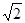 Q[x] - рационал сонлар майдонида келтирилмайдиган кўпхад
хисобланади, бирок (x2-2)
Q[x] - рационал сонлар майдонида келтирилмайдиган кўпхад
хисобланади, бирок (x2-2) R[x] – хакикий сонлар майдонида келтириладиган кўпхадга
мисол бўлади, яъни (x2-2)=(x-
R[x] – хакикий сонлар майдонида келтириладиган кўпхадга
мисол бўлади, яъни (x2-2)=(x-
Умуман олганда F[x] – дан олинган кўпхадлар келтирилган ёки келтирилмаган кўпхад бўлишлиги асосий масалалардан бири хисобланади. F – майдон учун бизни кўпрок Fp – майдондаги (р – туб бўлганда) кўпхадларнинг келтирилмаган бўлишлиги мухимдир.
Таъриф. Агар f(x) ва ?(x) кўпхадларнинг энг катта умумий бўлувчиси нолинчи даражали кўпхад бўлса, у холда f(x) ва ?(x) кўпхадлар ўзаро туб кўпхадлар деб аталади.
Масалан. f(x)=x4+x2+1, кўпхад F2[x] – да келтириладиган кўпхад, чунки x4+x2+1=(x2+x+1)*(x2+x+1)=x4+x3+x2+x3+x2+x+x2+x+1=x4+2x3+2x2+2x+x2+1=x4+x2+1(mod2).
Мисол. F2 – майдондаги тўртинчи даражали барча келтирилмайдиган кўпхадларни топинг.
Ечиш. Хаммаси бўлиб, 24=16 та 4-даражали кўпхад мавжуд, чунки x4+a3x3+a2x2+a1x+a0; a0, a1, a2, a3 = {,01}.
Келтирилган кўпхад бўладиганлари учун бўлувчи кўпхад ёки биринчи ёки иккинчи даражали кўпхад бўлади, яъни (a0+a1x+a2x2+x3)*(b0+x) ва (a0+a1x+x2)*(b0+b1x+x2), бу ерда ai, biF2. Булар хаммаси келтириладаган кўпхадлар. Барча F2 майдондаги 4-даражали келтириладиган кўпхадларни тушириб колдириб, куйидагига эга бўламиз:
f1(x)=x4+x+1, f2(x)=x4+x3+1, f3(x)=x4+x3+x2+x+1. Яъни колган 13 та кўпхадга x=-1 кўйилса колдик ноль бўлади, яъни бўлинади.
Теорема. Фараз килайлик f(x) F[x]. F[x]/f(x) –
фактор халка майдон бўлишлиги учун f(x) – кўпхад F –
майдонда келтирилмаган бўлишлиги зарур ва етарли.
F[x]. F[x]/f(x) –
фактор халка майдон бўлишлиги учун f(x) – кўпхад F –
майдонда келтирилмаган бўлишлиги зарур ва етарли.
Теорема. f(x) F[x] кўпхад келтирилмайдиган иккинчи ва учинчи
даражали бўлишлиги учун F[x] – халкада, f(x) –
кўпхад F – майдонда илдизга эга бўлмаслиги зарур ва
етарлидир.
F[x] кўпхад келтирилмайдиган иккинчи ва учинчи
даражали бўлишлиги учун F[x] – халкада, f(x) –
кўпхад F – майдонда илдизга эга бўлмаслиги зарур ва
етарлидир.
Мисол. Фараз килайлик
f(x)=x2+x+1 F2[x]. У холда фактор халка
F2[x]/(f) – куйидаги элементдан
pn=22 ёки [0], [1], [x], [x+1]
иборат.
F2[x]. У холда фактор халка
F2[x]/(f) – куйидаги элементдан
pn=22 ёки [0], [1], [x], [x+1]
иборат.
Бу фактор халка учун “+” ва “*” – жадваллари куйидагича.
|
“+” |
[0] |
[1] |
[x] |
[x+1] |
|
“*” |
[0] |
[1] |
[x] |
[x+1] |
|
[0] |
[0] |
[1] |
[x] |
[x+1] |
|
[0] |
[0] |
[0] |
[0] |
[0] |
|
[1] |
[1] |
[0] |
[x+1] |
[x] |
|
[1] |
[0] |
[1] |
[x] |
[x+1] |
|
[x] |
[x] |
[x+1] |
[0] |
[1] |
|
[x] |
[0] |
[x] |
[x+1] |
[1] |
|
[x+1] |
[x+1] |
[x] |
[1] |
[0] |
|
[x+1] |
[0] |
[x+1] |
[1] |
[x] |
Шундай килиб, жадвалдан кўринадики
F2[x]/(f) фактор халка майдон,
f(x)=x2+x+1 F2[x] – эса теоремага кўра
келтирилмайдиган кўпхад бўлади.
F2[x] – эса теоремага кўра
келтирилмайдиган кўпхад бўлади.
Мисол. F2[x] – да иккинчи ва учинчи даражали келтирилмайдиган кўпхадларни топинг.
Ечиш. Демак, F2[x] – халкада битта иккинчи даражали f(x)=x2+x+1 – келтирилмайдиган кўпхад ва f1(x)=x3+x+1, f2(x)=x3+x2+1 иккита учинчи даражали келтирилмайдиган кўпхадлар мавжуд экан.
Теорема. f(x) F[x] кўпхад келтирилмайдиган иккинчи ва учинчи
даражали бўлишлиги учун F[x] – халкада, f(x) –
кўпхад F – майдонда илдизга эга бўлмаслиги зарур ва
етарлидир.
F[x] кўпхад келтирилмайдиган иккинчи ва учинчи
даражали бўлишлиги учун F[x] – халкада, f(x) –
кўпхад F – майдонда илдизга эга бўлмаслиги зарур ва
етарлидир.
Мисол. Кўпайтириш жадвалидаги элементларни олиш учун мос сатр ва устунлар кўпайтмаси натижасини f(x)=x2+x+1 кўпхадга бўлиб, mod 2 – бўйича жавоб ёзилади.
Масалан: [x+1]*[x]=x2+x
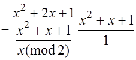
ёки [x+1]*[x+1]=x2+2x+1.
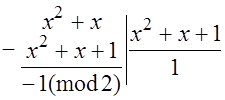
Бу ерда -1(mod2)=(-1+2)(mod2)=1. Хакикатан жадвалда шу элемент турибди.
Машклар.
1) F2 – майдондаги учинчи даражали барча келтирилмайдиган кўпхадларни топинг;
2) F3 – майдондаги иккинчи даражали барча келтирилмайдиган кўпхадларни топинг;
3) F3[x]/(f), f(x)=x2+x+1 – фактор халка учун “кўшиш” жадвалини хосил килинг;
4) F3[x]/(f), f(x)=x2+x+1 – фактор халка учун “кўпайтириш” жадвалини хосил килинг.